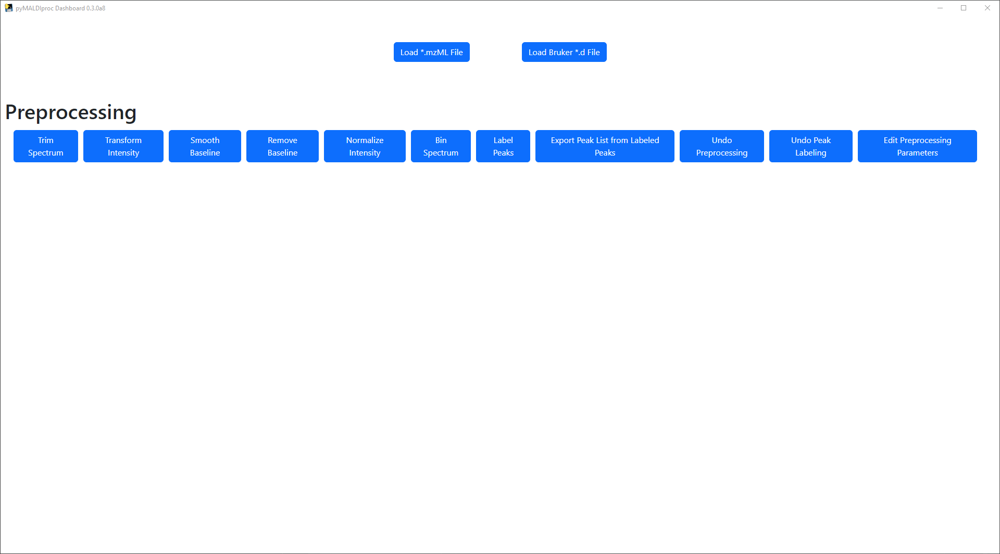
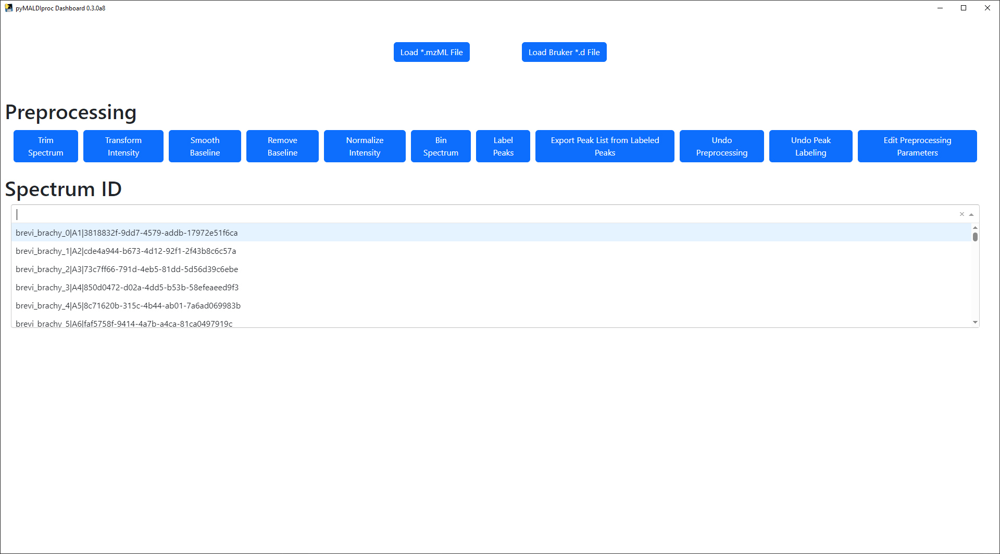
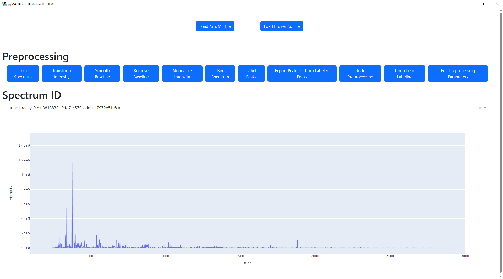
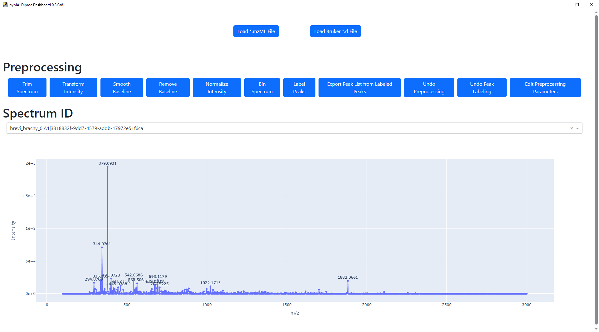

pyMALDIviz Usage¶
pyMALDIviz provides a simple Dash dashboard that can be used to visualize MALDI data.
pyMALDIviz can be launched by downloading the compiled package from
Github and starting
pyMALDIviz.exe. Alternatively, after installing pyMALDIproc and pyMALDIviz as detailed in the
installation instructions, pyMALDIviz can be launched from the command line via the
pyMALDIviz command with the appropriate conda environment activated.
Once loaded, you will see the main pyMALDIviz window. Buttons to load in data, perform preprocessing, and edit preprocessing parameters are present.
Data can be loaded by clicking on the Load *.mzML File or Load Bruker *.d File buttons, which will open one of
the file dialogues shown below to open an *.mzML file or *.d directory, respectively.
The selected MALDI data will be loaded into pyMALDIviz, and a dropdown menu will appear where the loaded spectra can be selected.
Selecting a spectrum from the dropdown can will load an interactive spectrum plot. The zoom level can be adjusted by clicking and dragging or reset using the controls on the upper right hand corner of the plot. The controls also provide various options, including saving the current plot to a *.png file.
Preprocessing can be applied to spectra by clicking on the any of the preprocessing buttons above the spectrum plot.
The preprocessing parameters can be edited via the Edit Preprocessing Parameters button, which will open another
window with preprocessing parameters for each step.
Any edited parameters can be saved by clicking the Save button, and a confirmation message will appear once the
parameters have been saved.
Once preprocessing and peak picking has been applied, a spectrum will similar to the spectrum shown below. In this example, spectrum trimming, baseline smoothing, baseline removal, intensity normalization, and peak picking with deisotoping has been applied to the spectrum.
If at any point, the applied preprocessing proves to be unsatisfactory, preprocessing can be cleared using the
Undo Preprocessing Button, which will reset the spectrum plot to its default state in which the raw data is
displayed.
In addition to being visualized, the peak list seen in the spectrum plot can also be saved to a CSV file for use with
downstream analysis platforms/pipelines by clicking the Export Peak List from Labeled Peaks button, which will
open a dialogue to save the CSV file.